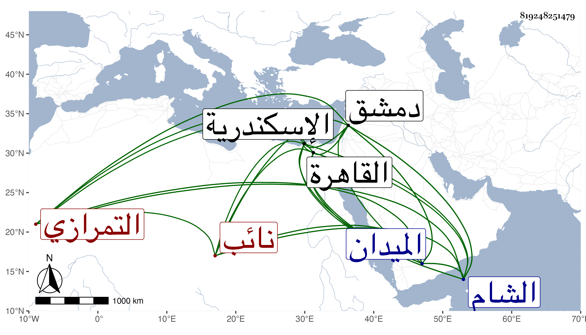

0902Sakhawi.DawLamic.ITO20230111-ara1.EIS1600.819248251479
Biography ID: 819248251479
1012
أقبغا العلاء التمرازي نائب الشام ، تقدم في الأيام المظفرية ثم عمله الأشرف أمير مجلس ثم نائب الاسكندرية مع استمراره على إقطاع التقدمة ثم عاد إلى القاهرة على إمرة مجلس ثم استقر في الأيام الظاهرية أتابك العساكر ثم نائب الشام فلما كان في يوم السبت سادس عشر ربيع الآخر سنة ثلاث وأربعين خرج بعد الصبح إلى الميدان بدمشق فلعب الرمح وعلم عدة من مماليكه ثم الكرة وغير في ذلك كله عدة خيول فلما كان قرب الميدان مال عن فرسه فلحقه مماليكه قبل سقوطه إلى الأرض وتكاثروا عليه ثم حملوه إلى قاعة بالقرب من الميدان وهو ميت ثم نقل إلى دار السعادة في محفة على أنه مريض ثم بعد يسير أشيعت وفاته فصلى عليه ودفن بتربة تنم الحسني نائب دمشق وقد زاد على الستين وكثر الأسف عليه فقد كان دينا متهجدا متعبدا كثير الصدقات والمحبة في الصلحاء والعلماء مع الانفراد بفنون الفروسية بحيث تخرج به جماعة رحمه الله . وهو مذكور في حوادث شيخنا وتمراز مولاه من مماليك الظاهر برقوق .
